Laboratorio de captura de movimiento
Capturas
01
Empezamos con el torso el cual debe tener 8 subdivisiones de axis y 4 subdivisiones en altura (revisa la figura a continuación).

02
Acomodamos los vertices y agregamos una primera extrusion para definir la base del cuello.
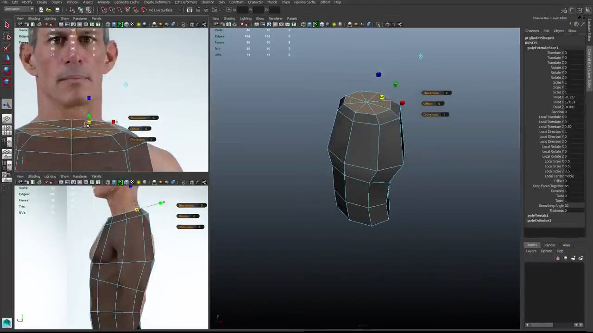03
Volvemos a extruir para generar el cuello.
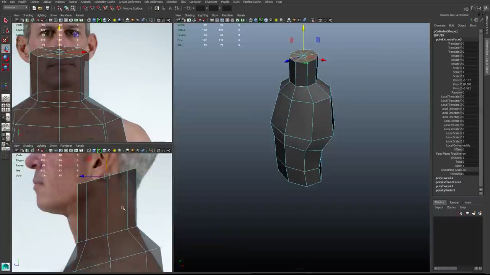04
Agregamos un loop a la altura del pecho.
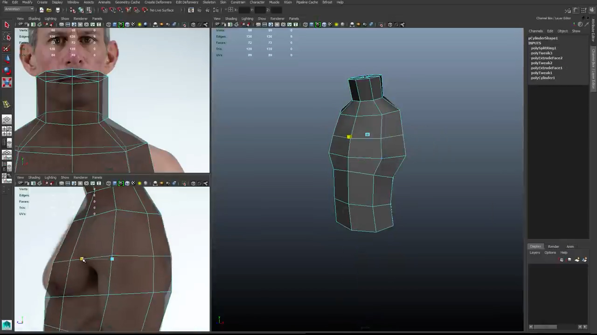Proceso de agregar el loop.

05
Para el brazo creamos un cilindro con 6 subdiviviones en los axis y 6 subdivisiones de altura, rotamos hasta en la vista frontal tengamos orientadas de frenta las caras.
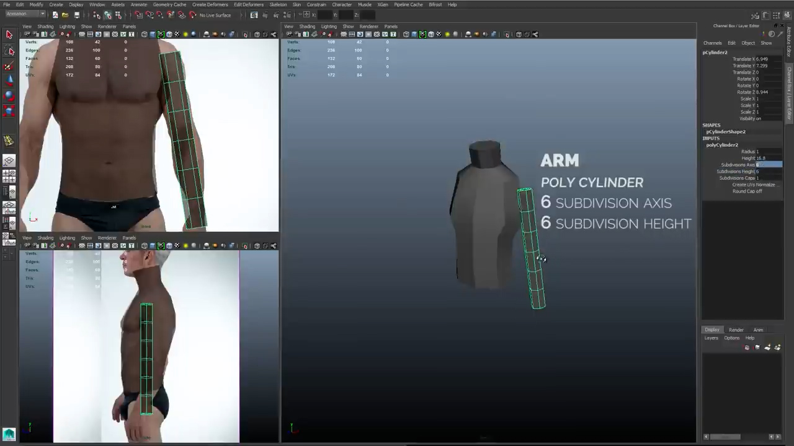06
A la mitad de la geometria pivoteamos.

07
Para la pierna usamos 8 subdivisiones en axis y 6 subdivisiones para la altura.
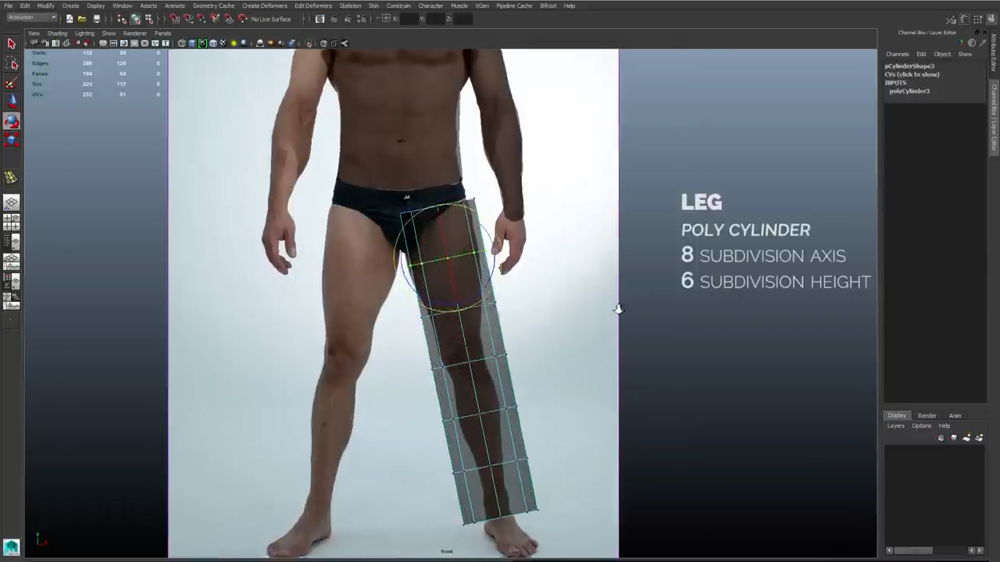08
Ajustamos las vertices.
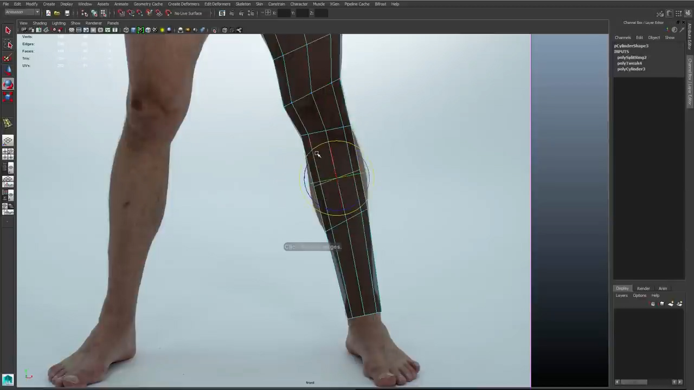Agregamos un loop para la pierna

Y uno para el tobillo

09
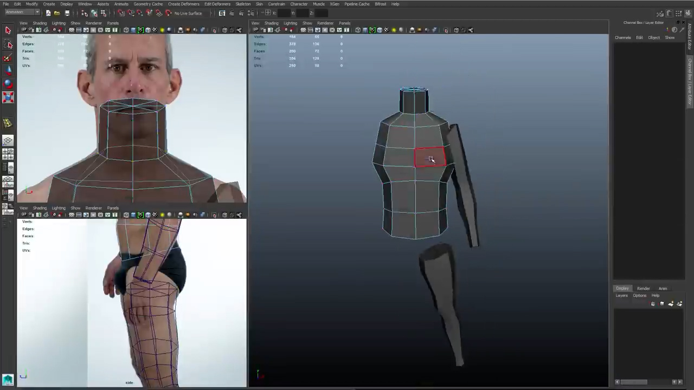10
11
Cortamos a la mitad el torso.
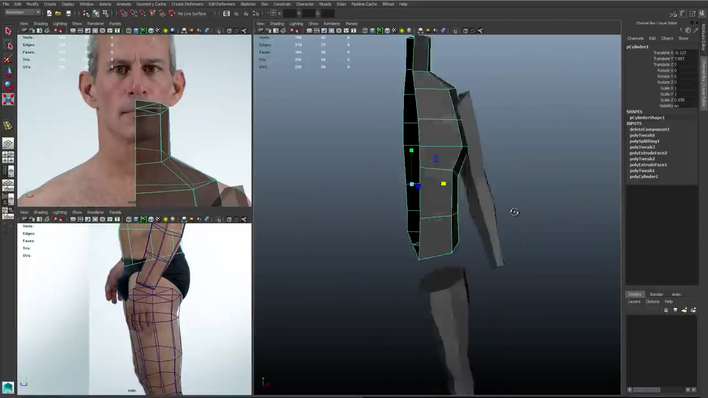12
Generamos el simétrico.
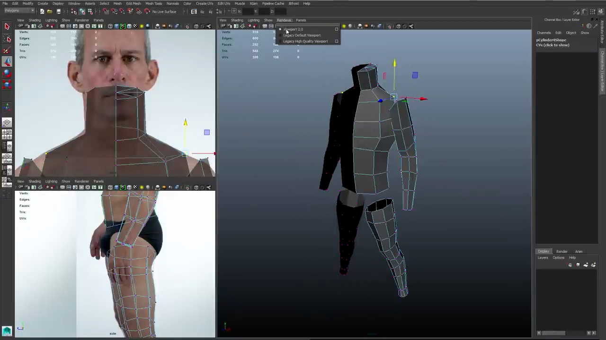13
Se elimina la parte superior del brazo

14
Tenemos que lograr los sigientes loop que son importantes para el posterior riggin y mapeado.
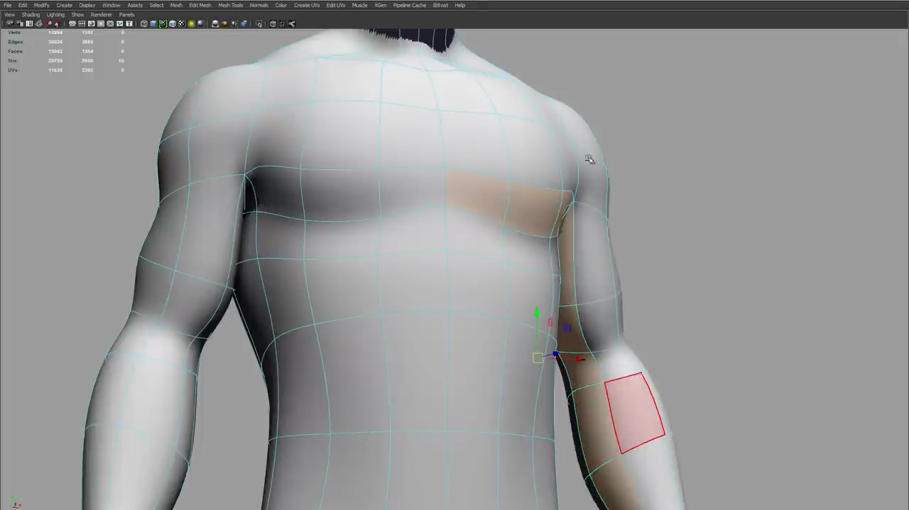El siguiente
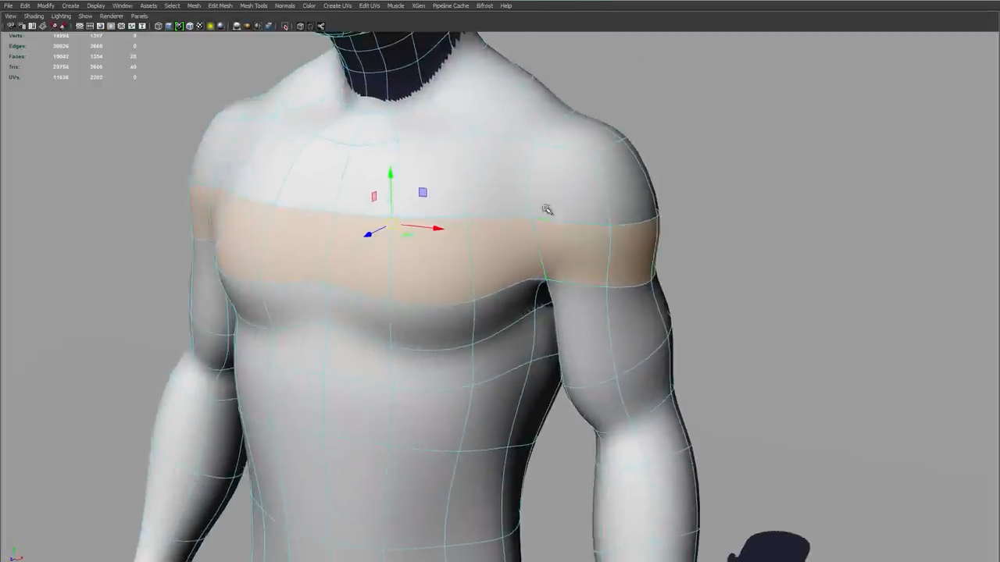Tercer loop
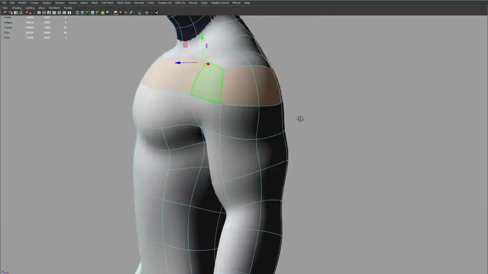15
Agregamos un loop para la parte inferior del pecho y lo desplazamos.

16
Seleccionamos las cuatro caras que van a ser el hombro y lo extruimos.

17
Unimos los vertices del hombro y brazo
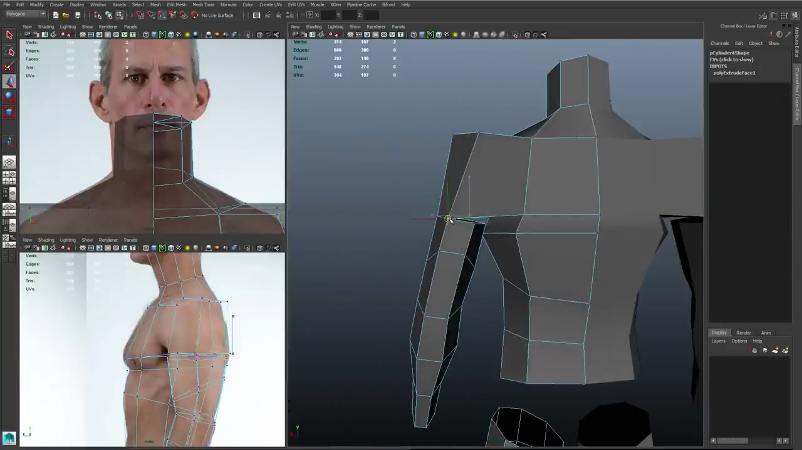Referencias
Vista frontal
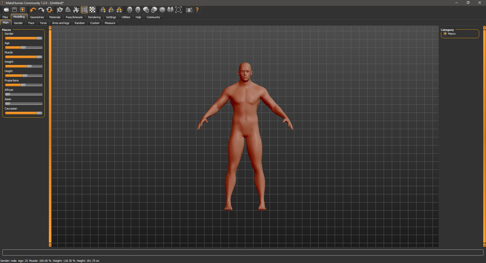Vista lateral izquierda
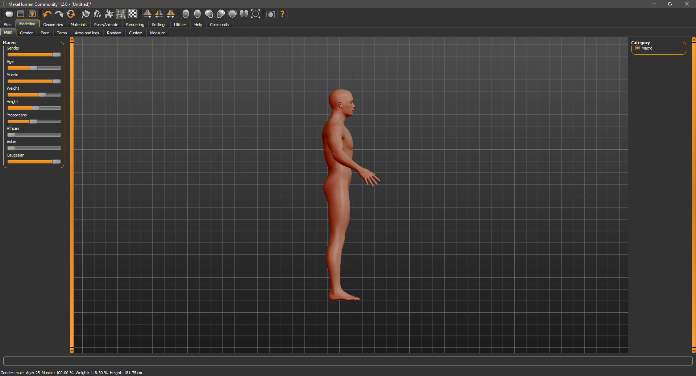bitacora: AquÍ
Home